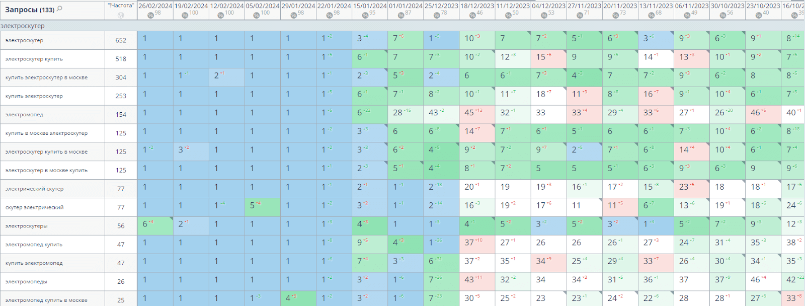
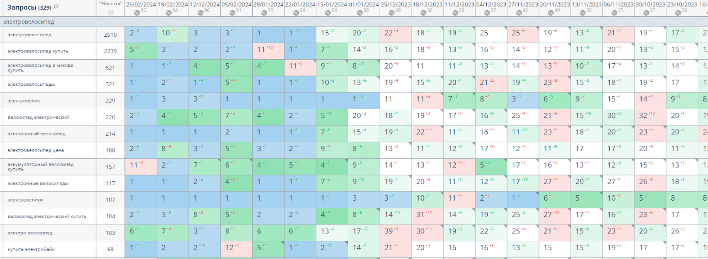
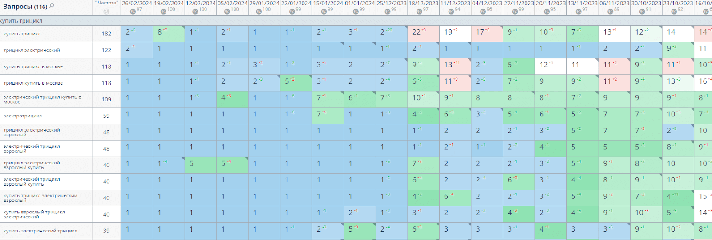
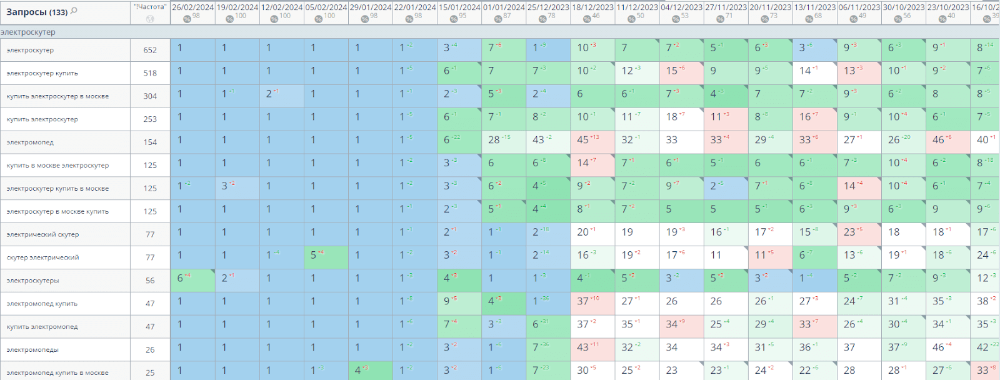
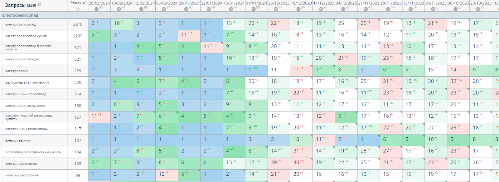
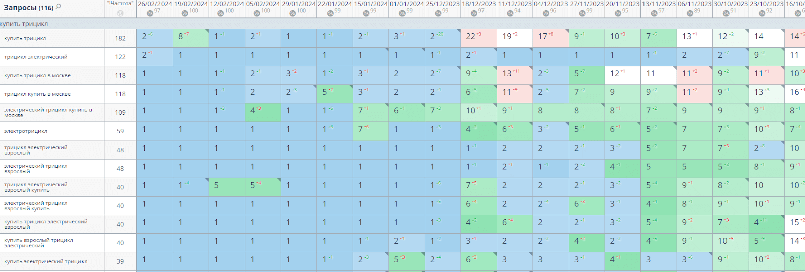

Кейс №1: от 0 до 690 ключей в топ-3 за 3 месяца в нише "Разработка сайтов и приложений"
Вводные данные
Ниша: Веб-разработка, создание программ и мобильных приложений
Гео: РФ
Какие услуги оказывали: Продвижение сайта
Предисловие
Когда клиент обратился к нам, у них уже был работающий сайт с небольшим количеством посадочных страниц и блогом. Однако, их трафик явно не соответствовал уровню их экспертизы и качеству услуг. Сайт практически не был виден в поисковой выдаче по ключевым запросам, а трафик составлял всего 684 посетителя в месяц.
Передо мной были поставлены амбициозные, но достижимые цели:
- Увеличить органический трафик до 3000 посетителей в месяц
- Вывести ключевые запросы в ТОП-10 поисковой выдачи
Клиент рассчитывал увидеть значительные результаты в течение 6-12 месяцев.
Ключевые задачи
- Провести комплексный аудит сайта, включая технический, SEO и маркетинговый анализ.
- Разработать детальную SEO-стратегию на основе анализа конкурентов и особенностей ниши.
- Оптимизировать существующий контент и создать новый, ориентированный на целевые запросы.
- Улучшить техническую составляющую сайта для повышения скорости работы и улучшения индексации.
- Разработать и реализовать стратегию наращивания ссылочной массы.
- Оптимизировать коммерческие факторы для повышения конверсии.
- Разработать контент-стратегию для блога, направленную на привлечение целевого трафика.
Результаты
Рост органического трафика
С октября 2023 года по последний отчетный месяц трафик вырос с 684 до 5200 посетителей в месяц, что превзошло изначальную цель в 3000 посетителей.

Динамика роста трафика в Яндексе

Динамика роста трафика в Google

Улучшение позиций по ключевым запросам


 




